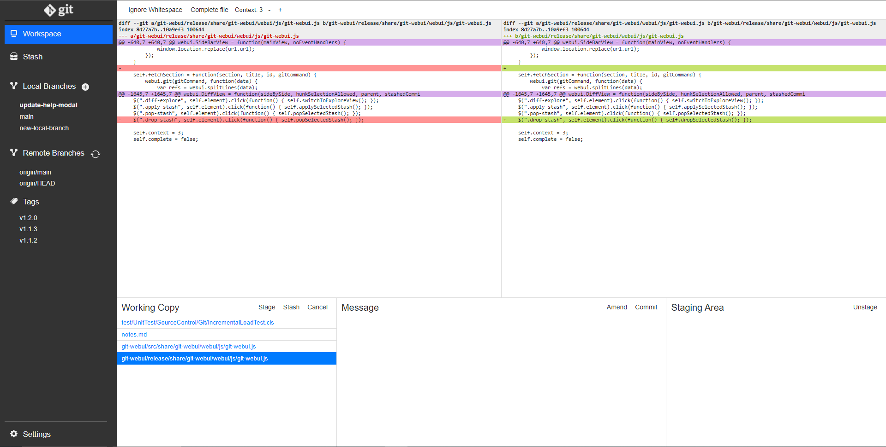

History Viewing
The toolbar on the left shows your branches and tags. The log of the currently selected one is displayed.
When selecting a revision the diff of this specific commit is displayed in the right panel.

On top of the right panel, you can choose 'Tree' to display the versioned content at the specific revision selected in the left panel. You can browse through directories and display file contents.

Commit
Commits can only be made from localhost.
- Working copy lists the modified files (compared to the staging area) in your working directory
- Message lets you enter a commit message
- Staging area lists the modified files (compared to HEAD) in your staging area. These are the changes that will be committed
The diff view lets you review the differences of the selected file. You can select code in more fine grained way:
- If the displayed diff is from the working copy, you may stage or cancel the selected lines.
- If the displayed diff is from the staging area, you may unstage the selected lines.